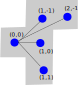

**Pentomino**
In this homework, you will need to write a program to solve the Pentomino puzzle. That is, to pack the 12 Pentominoes into rectangles or other shapes without overlapping.
Below are the 12 Pentominoes and two different ways to name them, by [Golomb](https://en.wikipedia.org/wiki/Golomb) and [Conway](https://en.wikipedia.org/wiki/John_Horton_Conway)(he died of complications from COVID-19 in 2020).


# Learning purpose
- Reduction in action! Translate/reduce a new problem (Pentomino) into a solved problem ([Exact Cover Problem])(https://en.wikipedia.org/wiki/Exact_cover).
- Knuth's [Algorithm X](https://en.wikipedia.org/wiki/Knuth%27s_Algorithm_X) with Dancing links.
- Backtracking Algorithm.
- Solving NP-complete problems by exhaustive search. The algorithm will be non-polynomial, but for moderate size problem it is still reasonably.
Note that this is an exercise to solve **Pentomino** by reducing it **Exact Cover Problem**, any attempt to solve Pentomino **directly** will be view as irrelevant to this homework.
# Number of solutions of pentomino
Since there are 5 grids in a piece of pentomino and there are in total 12 pieces of them, to cover a configuration with all pieces, the configuration must have 60 grids.
We first consider rectangles. There are four possible cases. The corresponding number of solutions are listed below.
- 3 x 20..........................2
- 4 x 15..........................368
- 5 x 12..........................1010
- 6 x 10..........................2339

You can find the solutions of other possible configurations on [this page](https://isomerdesign.com/Pentomino/), for example,
,
which is a $8\times 8$ rectangle with four forbidden grids. According to the website mentioned above, it has 21 solutions.
If you do some research you will find some materials would say the $3\times20$ rectangle has 8 solutions. That is because the flipped and rotated version of the above two solutions are counted.
One [standard way](https://gp.home.xs4all.nl/pentomino.html) to avoid trivial solutions, is to normalize the position of the 'F' (or R, if you are with Conway) piece: it must always be oriented in the position shown in the first picture, or rotated 90 degrees clockwise.
 
Another way to do it is to restrict V to just have one orientation, e.g., force V's corner to be at bottom left.
# Orientation and encoding of pentomino pieces
Each piece of the pentomino can have several orientations. For example, the F or R shape can be placed in
,
or flipped/rotated as
.
To encode the above block, we can use a relative location to represent the shape. For example, to represent the F shape, we can do

- Image the top-left grid of the shape to be at (0,0).
- X-axis goes from left to right; Y-axis goes from top to bottom.
- The the rest four grids will be at (1,-1), (2,-1), (1,0), (1,1).
- To represent the shape we just need to push all the coordinates in a length 10 array, or better, since the top-left is always (0,0), we can just store the coordinates. So we can use [1,-1, 2,-1, 1,0, 1,1] to represent the above orientation of the F shape.
In order to save your time, this file includes [all the orientations of all the shapes](shape_and_orientation.txt). In the document, the F shape is encoded by 8 orientations, by a two dimensional array:
~~~~~~~~~~~~~~~~~~~~~~~~~~~~~~~~~~~~~~~java
static final int[][] F = {{1, -1, 1, 0, 1, 1, 2, 1}, {0, 1, 1, -1, 1, 0, 2, 0},
{1, 0, 1, 1, 1, 2, 2, 1}, {1, 0, 1, 1, 2, -1, 2, 0}, {1, -2, 1, -1, 1, 0, 2, -1},
{0, 1, 1, 1, 1, 2, 2, 1}, {1, -1, 1, 0, 1, 1, 2, -1}, {1, -1, 1, 0, 2, 0, 2, 1}};
~~~~~~~~~~~~~~~~~~~~~~~~~~~~~~~~~~~~~~~
After we finish encoding all the shapes, we can put them altogether, in an array of 3 dimensions.
~~~~~~~~~~~~~~~~~~~~~~~~~~~~~~~~~~~~~~~java
static final int[][][] shapes = {F, I, L, N, P, T, U, V, W, X, Y, Z};
~~~~~~~~~~~~~~~~~~~~~~~~~~~~~~~~~~~~~~~
The possible orientation of each shapes:
| | |
-------|------|----------|--------
O: 2 | P: 8| Q: 8 | R: 8
S: 8 | T: 4 | U: 4 | V: 4
W: 4 |X: 1 | Y: 8 | Z: 4
Again, to avoid trivial solutions, you may want to restrict orientations of some shapes. Read the previous section for full details.
## Generate all legal positions
With the above encoding, you should be able to generate all the legal positions to place a shape. Say you want to do it for $3\times 20$ configuration, you can do
- Place the origin (in the above, I use top left grid INSIDE a shape as origin) of your shape in each of the position in the $3\times 20$ configuration.
- Calculate the coordinate of all the rest of the four grid.
- If none of the coordinates are out of the $3\times 20$ boundary, you have a legal position.
- Collect all the grids that the shape occupies, to form a set.
More details about how to generate the legal positions can be found in [this email response](legal-pos.png).
You might find a linear encoding of the configuration (say $3\times 20$) is more convenient, instead of talking about a two dimension configuration, you turn the coordinate of a grid into $\{0, 1, \cdots, 59\}$.
# Reduce from Pentomino puzzle to Exact Set Cover Problem
After you generate all the legal positions to place a shape, you should be able to
- Encode the legal positions into sets.
- and hence encode the Pentomino puzzle into a exact set cover problem.
After this step, you will get a gigantic table of sets!
You will need to **write a report to describe how you want to do the reduction and argue why it should work**.
Reading materials:
- Page 16 of Course Material "[TAOCP-dancing_links.pdf](TAOCP-dancing_links.pdf)" provides a solution.
- Read Wiki page for more information about [Exact Cover Problem](https://en.wikipedia.org/wiki/Exact_cover)
# Coding!
For simplicity, in this assignment we only consider the very regular configurations like $3\times 20$, $4\times 15$, $5 \times 12$, and $6 \times 10.$
## Input and Output
- Sample input: **3**
- Sample output: **2**
where input 3 means the $3\times 20$ configuration, the output 2 means the configuration has two solutions, as we discuss above.
## Knuth's Algorithm X
There is no better material than [Knuth's original paper](Dancing_Links.pdf) in 2000, and it is a very readable one. I suggest you read the master's work directly. Several highlights:
- Linked list support remove and recover operation.
- Use doubly linked list to represent sparse sets.
- Use a brute-force backtracking algorithm to solve exact cover problems.
To reduce your workload, I attached here an implementation of the [Dancing link data structure](DLX.java) (file name: DLX.java), in Java, for your reference. You can use it directly in your code, with caution. Sorry for those who don't use Java, it should not be too hard to implement a version in the language you choose. Note that I **removed** the implementation of Algorithm X in the code, though. It is your job to implement your own version.

The pseudocode of the core Algorithm X, *search()*, is a backtracking algorithm, which can be found on Page 5 of [Knuth's paper](Dancing_Links.pdf).
Now the Dancing Link data structure is given, you should be able to implement it. Note that you can increment the solution count when the terminating condition holds, i.e., when *R[h]=h* holds in the above code piece.
## Algorithm framework
You are required to do things in the following way since the purpose is to do learn reduction.
1. Generate all the legal positions and encode them as sets. You might need to represent the encoding in the runtime memory in a list of lists, or output them in a text file. You need to make your own decision. I suggest the later since it is easier to check. A sample encoding of $3\times 20$ legal positions in sets (in binary) looks like [this](3by20.txt), file name *3by20.txt*, which contains 1128 rows. The number of rows might **variate**, depending on the shape you choose to restrict in order to avoid trivial solutions.
**Important Note:** The [Java file](DLX.java) I gave **does not** use binary encoding of sets. That is, say, if you have a subset $\{1, 3, 4\}$ of a full set $\{1, 2, 3, 4\}$. The source code will just use integer $\{1, 3, 4\}$ to encode the set, instead of using the binary representation $\{1,0,1,1\}$. **Integer representation is conciser.**
If you use binary representation, you need to change the *buildDancingLinks()* in DLX.java slightly:
~~~~~~~~~~~~~~~~~~~~~~~~~~~~~~~~~~~~~~~java
private void buildDancingLinks(ArrayList> matrix) {
int nRows = matrix.size();
for(int r=0; r < nRows; r++) {
DataNode temp = null;
ArrayList row = matrix.get(r);
for(int i=0; i < row.size(); i++) {
if(row.get(i) == 1) { //binary encoding -> integer encoding.
ColumnNode colHead = columnNodesList.get(i);
DataNode newNode = new DataNode(colHead);
if(temp == null) temp = newNode;
colHead.U.linkDown(newNode);
temp = temp.linkRight(newNode);
colHead.columnSize++;
}
}
}
}
~~~~~~~~~~~~~~~~~~~~~~~~~~~~~~~~~~~~~~~
If you plan to use integer representation directly, you can ignore the above change of the method.
2. Use Dancing Links to implement algorithm X for Exact Cover.
3. Feed the encoding of Pentomino problem in 1 to the Exact Cover Solver you get in 2, to get the solutions of Pentomino.
4. Count and tell how many solutions you get.
From the above you should see that what we try to achieve is a **general problem solver**! It can solve a lot of problems as long as you can reduce you problems into Exact Set Cover Problem! Knuth's videos ([video1](https://www.youtube.com/watch?v=_cR9zDlvP88), [video2](https://www.youtube.com/watch?v=R9gRLnddOBg)) and [book](TAOCP-dancing_links.pdf) talk a lot of those problems, including Sudoku (数独), Polyominoes (Pentomino falls in this category), Polycubes (3D polyominoes!), and so on. The versatility of our solver is no surprise since we know that the Exact Set Cover Problem is NP-Complete, a very broad series of problems can be reduced to it.
## Testing
You might want to test your Algorithm X on some small-size exact cover problems, before you test your code on Pentomino, which has very large number of sets! Read the [Wiki page](https://en.wikipedia.org/wiki/Knuth%27s_Algorithm_X#Example) for Exact Cover Problem or Knuth's work to find such small-size examples.
# Submission:
1. Your **individual** source files on Canvas.
2. Screenshot(s) of the results of your program for all the required input (3, 4,5, and 6).
3. A document in PDF format describing how you encode/reduce the Pentomino problem into the Exact Cover Problem. You can do your research but you have to write it in your own words.
4. A .zip that contains everything!